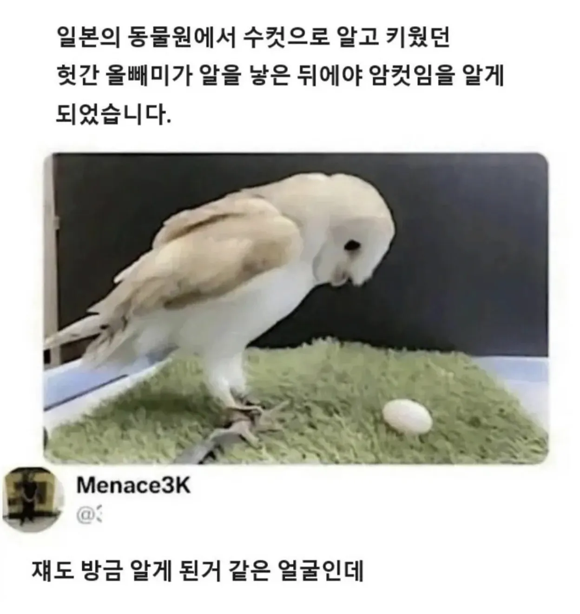

일본의 한 동물원에서
댓글
둘다 같은구멍이긴함 ㅋㅋㅋ
눈떠보니 암컷이었던 건에 대하여

톰보이 올빼미추
새끼...기열!!
암컷이 아니라 출산모드수컷이다
엣....이게..와타시..?
똥이 왜이렇게 크고 단단하지.. 변비인가?
헛간 올빼미는 또 뭐야 ㅋㅋ
영어 이름 직역하면 외양간(헛간)올빼미임
헛간에 둥지 지어서
저 가면올빼미 영어 이름이 Barn owl임
? 암컷 혼자서 알이 나옴?
우리가먹는 달걀 대부분이 암컷이 혼자낳은 무정란이야 수컷이랑 교미해서 낳으면 유정란이고
실질적으로 월경이랑 원리는 똑같음 닭은 매일매일 알로 나오는거고
알고 싶지 않은 진실이구나..
그럼 우린 사실상 월경을 먹고 있었다는 거냐
그리고 소의 모유를 받아마시고있지
흠 이건 좀 꼴리는데
이게 뭐지 내 뿡알인가?
30살이라도 됐나
와타시가...암컷?
일본놈들 오빠를 암타시카는것도 모자라서
조류까지 암컷화 시키네 ...
이... 이게뭐노?
근데 새들한테 누가 가르쳐준것도 아닌데 똥인지 알인지 어떻게 알고 품는걸까?
쟤네똥은 물처럼 묽자너 ㅋㅋㅋㅋㅋㅋㅋㅋ 몸에서 나오는거중에 품을만한건 알밖에없음
어? 내가 똥을 싼게 아니였어?